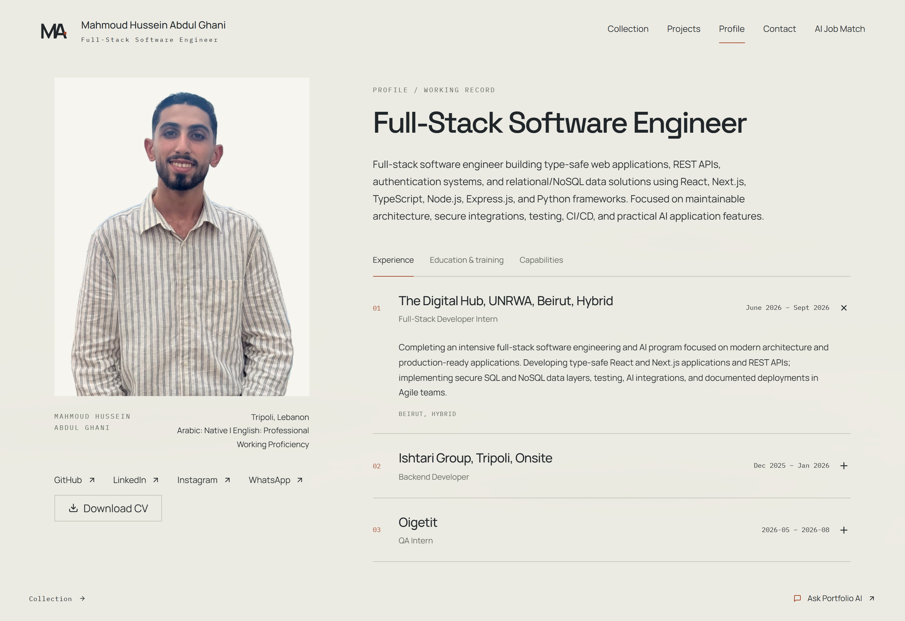
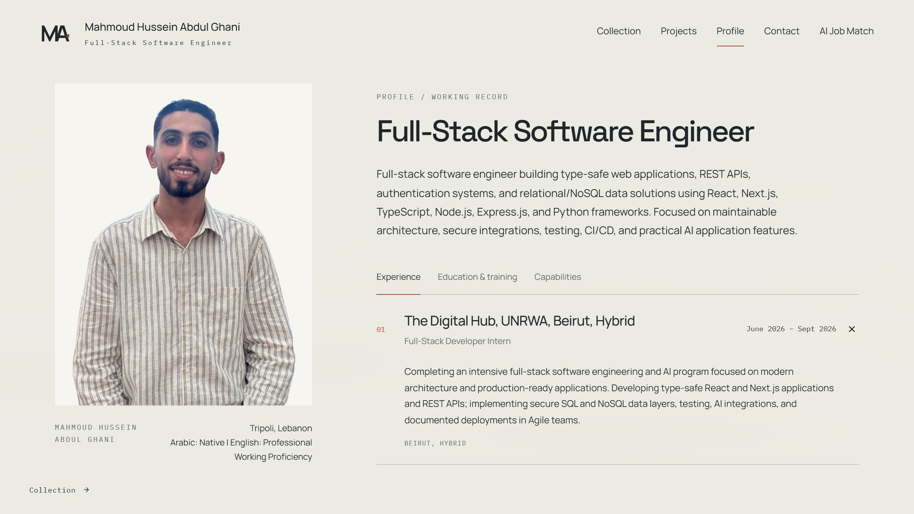
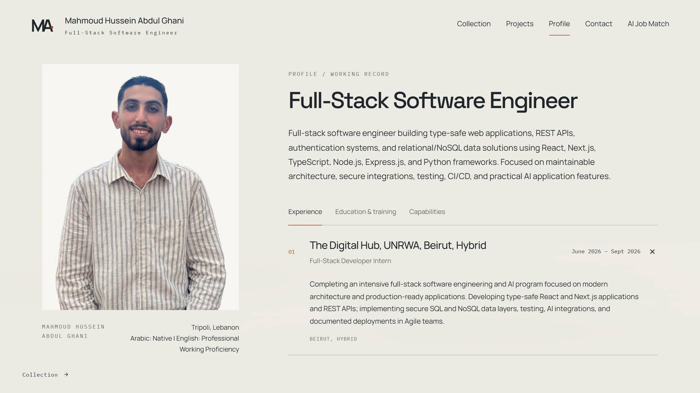
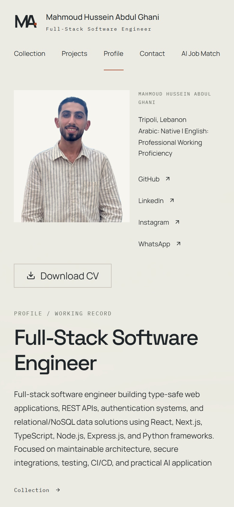
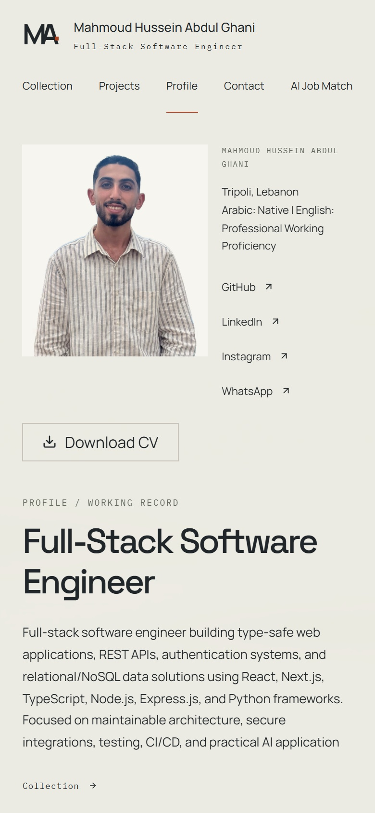
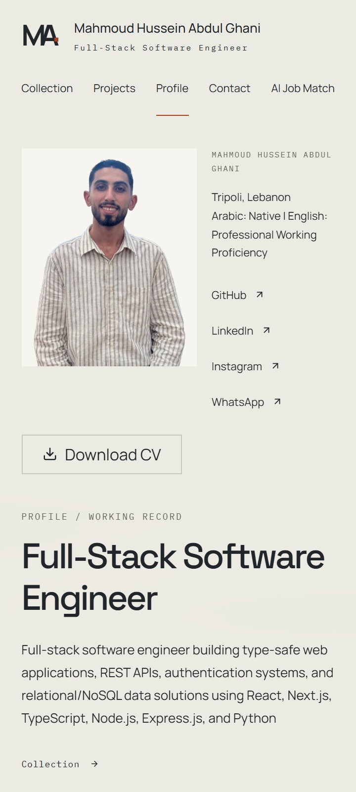
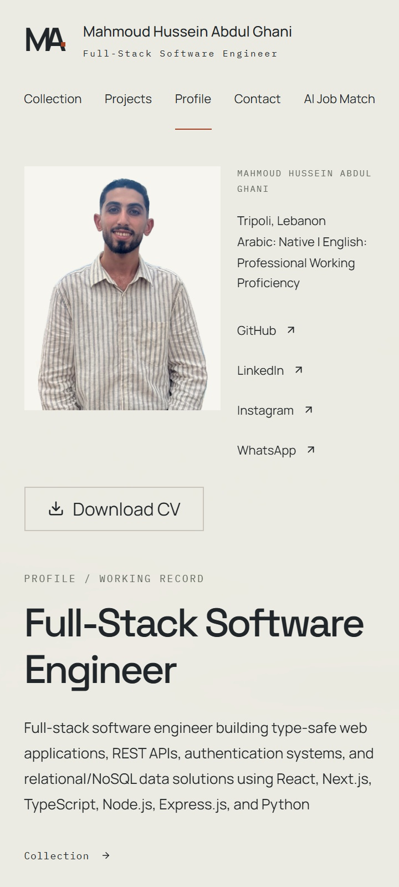
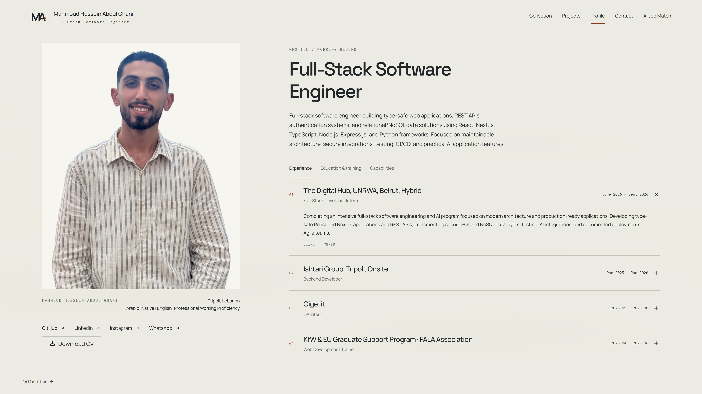
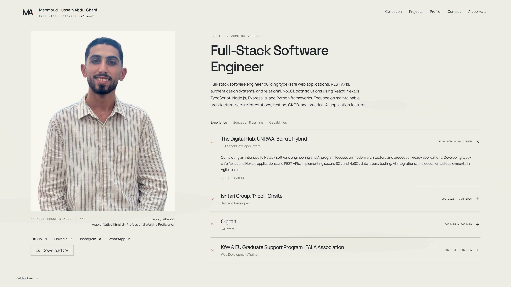

Profile portrait: final photographic finish
8 October 2026. The existing photograph, cutout and accepted Profile composition are preserved. A restrained correction neutralizes blue shading and gently lifts facial shadows. Perimeter color spill is corrected while every alpha value remains unchanged.
Original pixels are adjusted photometrically; facial features, texture, clothing, hands and watch are not regenerated. No skin smoothing or sharpening. The original photograph and previous edited assets remain unchanged.
1363 × 936 · 2× display

Complete Profile layout · Portrait panel at capture resolution



Complete Profile layout · Portrait panel at capture resolution


1280 × 720 · 2× display


Complete Profile layout · Portrait panel at capture resolution



Complete Profile layout · Portrait panel at capture resolution


390 × 844 · 2× display


Complete Profile layout · Portrait panel at capture resolution



Complete Profile layout · Portrait panel at capture resolution


360 × 800 · 2× display


Complete Profile layout · Portrait panel at capture resolution



Complete Profile layout · Portrait panel at capture resolution


1920 × 1080 · 2× display


Complete Profile layout · Portrait panel at capture resolution



Complete Profile layout · Portrait panel at capture resolution


Actual file sizes and display density
The live page's reported 436px natural width was density-adjusted: decoded files were actually 480px at 1× and 768px at 2×. The new sizes attribute reflects the actual image slot, and five lossless WebP variants are generated from the high-resolution registered PNG, capped at the native 768px cutout width.
| Viewport | Decoded file width | Download before → after | Final effective density |
|---|---|---|---|
| 1363 × 936 | 768px → 768px | 584.9 → 589.2 KiB | 2.23× |
| 1280 × 720 | 768px → 768px | 584.9 → 589.2 KiB | 2.40× |
| 390 × 844 | 480px → 384px | 310.3 → 212.9 KiB | 2.23× |
| 360 × 800 | 480px → 320px | 310.3 → 158.4 KiB | 2.03× |
| 1920 × 1080 | 768px → 768px | 584.9 → 589.2 KiB | 1.53× |
At 360px/390px widths, downloads are approximately 49%/31% smaller while still exceeding 2× density. The full-resolution file is about 0.7% larger after color finishing because compression preserves all visible RGB and alpha values exactly. A redundant 704px export was removed because it compressed worse than the sharper native file.
At 1920px, the unchanged image slot is roughly 501 CSS pixels wide, requiring about 1002 source pixels for 2×. The available cutout is 768px; it remains native instead of fabricating detail. A larger original would be required for true 2× at that width.
Verification and limits
Panel size and position, image width/position and heading alignment match the before layout exactly. Minor mobile image-height rounding remains below 0.2 CSS pixels; panel crop bounds are unchanged. Full Chrome suite: 144 passed. WebKit public/portrait suite: 28 passed. Final optimized-srcset checks: 21 Chrome and 14 WebKit passed. Lint, typecheck, build and both image tests passed.
Colors and edges were inspected in actual Chrome/WebKit Profile captures. Physical phones and calibrated displays remain unverified. No deployment, merge, commit/push or live database change.
Separate finished master · Preservation and delivery measurements · Checks · Variant paths and dimensions